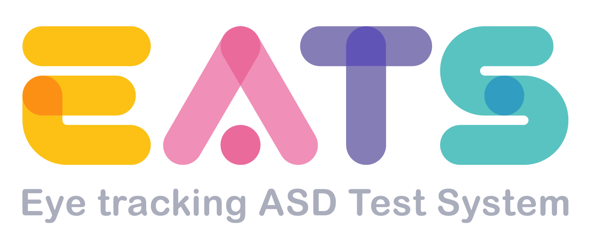

사용자의 안전한 사용을 위한
의료기기 사용 안내 및 주의사항

1. 본 의료기기는 진단 보조용 기기입니다.
- 본 기기는 시선 추적 및 분석을 통해 자폐 스펙트럼 장애(Autism Spectrum Disorder, ASD)와 같은 신경발달장애의 조기 식별 및 평가를 보조하도록 설계된 진단 보조용 기기입니다.
- 본 기기는 시각적 주의 및 시선 패턴에 대한 객관적인 바이오마커와 통찰을 제공하며, 임상 및 연구 환경에서 훈련된 의료 전문가에 의해 사용하도록 제작되었습니다.
- 본 기기는 의사의 진단을 보조하는 목적으로 개발되었으며, 최종적인 진단 및 의학적 판단은 반드시 전문의가 내립니다.
2. 사용가능 대상 및 제한 사항
- 본 기기는 16개월에서 38개월 사이 영유아의 시선 추적을 통한 자폐스펙트럼장애 선별 검사를 지원합니다.
- 검사 대상 영유아는 시각 기능에 이상이 없는 경우에 한하여 사용 가능합니다.시각적 문제가 있는 경우 검사 결과의 신뢰도가 저하될 수 있습니다.
3. 검사결과의 변동가능성
- 검사 당시 영유아의 컨디션(예: 피로, 집중력, 기분 등)에 따라 검사 결과가 영향을 받을 수 있습니다.
- 최상의 검사 환경을 위해 영유아가 편안한 상태에서 검사를 진행하는 것이 권장됩니다.
4. 검사주기 권장사항
- 미국소아의학회(America Academy of Pediatrics, AAP)에서는 30개월 이전에 적어도 3번 이상의 ASD 검사를 받을 것을 권장합니다.
- 조기 선별 검사는 자폐스펙트럼장애를 보다 신속하게 발견하고, 필요한 경우 조기에 개입할 수 있도록 돕습니다.
- 본 안내문을 숙지하시고, 사용 전 반드시 의료 전문가와 상담하시기 바랍니다.
자폐스펙트럼장애 진단
결과 보고서
검사기관명
ㅇㅇㅇㅇ병원
주소
서울특별시 강남구 xx로 123
연락처
02-123-3455
담당의사
김의사
1. 환자 정보
| 이름 | 홍길동 | ID | 1234-56 | 성별 | 남 | 나이(개월) | 만 1세 (15개월) |
|---|---|---|---|---|---|---|---|
| 평가일 | 2025년 1월 29일 | 평가도구 | EATS v1.0 | ||||
2. 진단 결과 요약 : 자폐스펙트럼장애(ASD) 음성자폐스펙트럼장애(ASD)양성
*AVC(AOI Vacancy count percentage) 수치가 높게 나올수록 ASD일 가능성이 높다는 의미
3. 진단 내역
| Video 1 | Video 2 | ||
|---|---|---|---|
| AOI (관심영역) |
 |
 |
 |
| 측정 내용 | - 마음이론 (Theory of Mind) - 사회성 - 초기 언어발달 |
- 공동주의 (Joint Attention) - 사회적 의사소통 능력 |
|